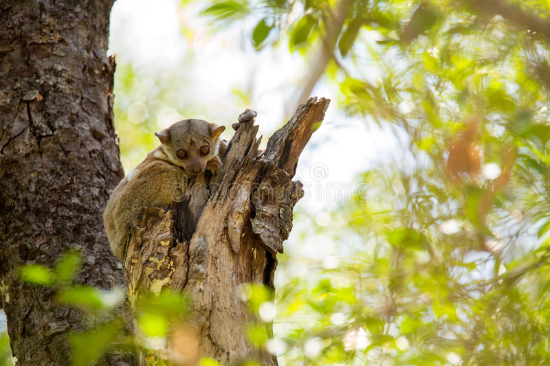
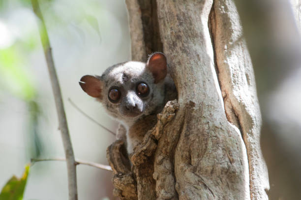
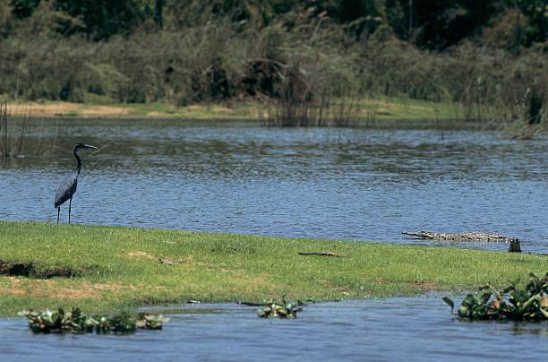
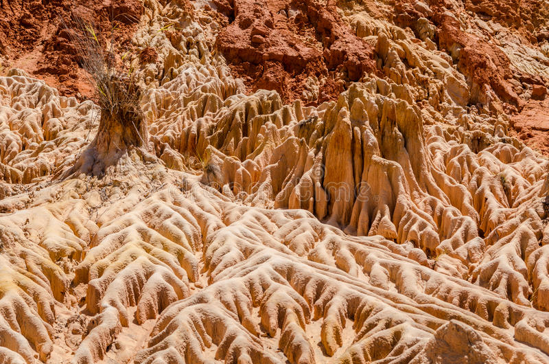

Explorez le Nord de Madagascar
CIRCUIT NORD : CIRCUIT BROOKESIA MINIMA
TOUR NORD vous offre l'opportunité de découvrir en un seul endroit les plus belles beautés de Madagascar. Le circuit Nord vous réserve bien d'autres surprises avec sa faune et sa flore diversifiées et endémiques que l'on ne trouve qu'à Madagascar, c'est l'endroit idéal pour la faune et la flore, comme les oiseaux, les lémuriens, les BAOBAB, les caméléons, le BROOKESIA MINIMA le plus petit caméléon du monde avec moins d'un pouce, le TSINGY d'ANKARANA, le TSINGY ROUGE
Le circuit Nord vous offre aussi la meilleure plage de Madagascar, la plus grande baie du monde. La mer d'émeraude avec son eau turquoise. Les 3 baies .
TOUR NORD comprend NOSY BE. L'île volcanique de Nosy Be a tous les ingrédients que vous recherchez avec son sable blanc, son eau turquoise et ses merveilleux fruits de mer. C'est le point de départ idéal pour des croisières vers des archipels paradisiaques.
Situé dans la région Boeny, dans le nord-ouest de la Grande Île, le Parc National d’Ankarafantsika est délimité à l’est par la rivière Mahajamba et à l’ouest par le fleuve Betsiboka. Le parc est traversé par la Route Nationale 4 et couvre une superficie de 136 000 hectares. Ankarafantsika était autrefois dénommé Station forestière d’Ampijoroa. Il est réputée pour son lac, ses oiseaux et ses tortues.
Ankarafantsika et son parc


Ankarafantsika est un dérivé du mot « Garafantsy », signifiant « montagne d’épineux » ou « homme rusé et effrayant ». Ces forêts abritaient un légendaire patriote devenu bandit, nommé Ravelobe, qui semait la terreur. Garafantsy rappelle cette période où la localité suscitait l’effroi des voyageurs. Incontournable du parc, le grand lac sacré Ravelobe qui s’étend sur près de vingt-sept hectares. L’histoire raconte que le fameux bandit et toute sa famille s’y seraient suicidés. Le peuple Sakalava croit que les crocodiles du Nil, peuplant cette étendue d’eau, sont les descendants de Ravelobe et sont donc considérés comme sacrés. Le lac est également le refuge de nombreux oiseaux aquatiques comme les hérons, l’aigle pêcheur, l’ibis, ou les canards ; et des Rere, tortues d’eau douce.
Le lac sacré Ravelobe
Le site abrite une mosaïque d’écosystèmes : une forêt dense sèche, une savane et le canyon multicolore d’Ankarokaroka. Ce dernier est formé par de grand « lavaka » façonné par l’érosion. Le canyon offre une vue spectaculaire sur les forêts environnantes. Plus de 800 espèces de plantes y ont été inventoriées : une espèce de baobab endémique du parc Adansonia madagascariensis var. boinensis, des bois durs et précieux comme le palissandre, des plantes herbacées, des euphorbiacées, des plantes médicinales, et des plantes ligneuses
Site de birdwatching par excellence, ce parc est l’un des rares endroits au monde qui possède une si grande variété d’oiseaux, comme le Pygargue de Madagascar, le Dyal malgache, le Bulbul de Madagascar, le faucon de Newton, les Vanga… Le parc compte en tout 129 espèces d’oiseaux, dont 75 sont endémiques. Il abrite également des caméléons, des iguanes, des serpents, des tenrecs, huit espèces de lémuriens diurnes et nocturnes dont le Sifaka de Coquerel (l’emblème du parc) et le microcebus ravelobensis, un des plus petits microcèbes, endémique du lieu.
Ankarana
C’est l’un des deux endroits où il est possible de contempler les Tsingy (à part celles de Bemaraha). Pour découvrir cette formation rocheuse hors du commun, il faut quand même beaucoup d’endurance physique, car certaines parties exigent d’escalader de gros blocs de pierre ou encore de parcourir des crevasses très étroites avant d’atteindre les étendues de rochers à perte de vue que la pluie et le vent ont sculptées majestueusement au fil du temps. Le camp d’Anilotra est le meilleur endroit pour profiter de la beauté des Tsingy. Le campement se trouve à environ deux heures de marche. En chemin, vous passerez par le lac Vert, un lac de cratère. C’est une excursion d’une journée qui vous promet une magnifique découverte. Vous passerez par des passerelles en planches de bois qui vous offrent des vues imprenables sur les roches friables. Quelques plantes du genre pachypodium ont réussi à pousser sur les roches calcairres.

Certains gouffres inaccessibles ont permis à plusieurs espèces de plantes et d’animaux de vivre harmonieusement. La végétation du plateau karstique est composée de plantes envahissantes, ainsi que de Canarium de Madagascar, de pandamus, de lianes, d’orchidées aériennes et de baobabs que vous pourriez découvrir en empruntant les sentiers botaniques. 10 espèces de lémuriens y ont trouvé refuge, notamment l’hapalémur griseus, l’eulemur fulvus ou encore le Lépilemur septentrional. Le « Mésite varié » (une espèce endémique) fait partie des 92 espèces d’oiseaux qui peuplent le parc. Vous rencontrerez peut-être des Fosa et des caméléons sur votre chemin. Dans les rivières vive une faune troglodyte, dont certaines espèces n’ont pas de pigments ou d’yeux. Préparez-vous à rencontrer des chauves-souris dans les grottes. 13 espèces ont été répertoriées dans le parc.
Nosy Be et ses îles
Nosy Komba qui veut dire « Île aux lémuriens » est la deuxième principale île de l’archipel de Nosy Be. Elle est également connue pour abriter de nombreux lémuriens considérés comme sacrés par les habitants de l’île. Venez découvrir les paysages grandioses qui la façonnent ainsi que les nombreuses activités et sports nautiques que l’on peut y faire.Nosy Komba est l’île la plus peuplée après Nosy Be avec près de 4000 habitants, elle n’est seulement qu’à 15 minutes de Hell Ville en bateau.
Elle abrite en son sein une multitude de lémuriens protégés par le « fady » (interdit local). En effet, ils sont considérés comme sacrés par les habitants de l’île et ne sont donc ni chassés ni embêtés de quelque manière que ce soit. Vous y trouverez entre autre le Lémur Macaco qui vit en groupe de vingt individus et qui se nourrit principalement des fruits de l’île.